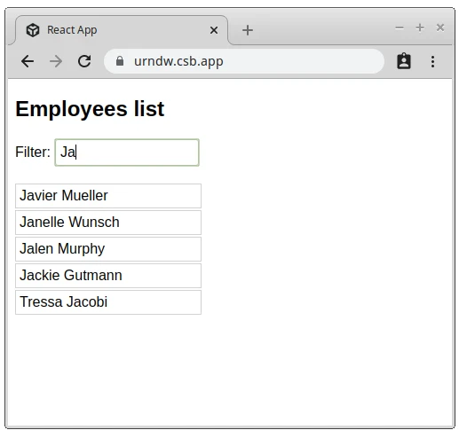

原文连接:https://www.cnblogs.com/tangshiwei/p/11819369.html
作者：Dmitri Pavlutin
译者：小维FE
原文：dmitripavlutin.com
国外文章，笔者采用意译的方式，以保证文章的可读性。
当执行像数据获取这样的I/O操作时，你必须发起获取请求，等待响应，将响应数据保存到组件的状态中，最后渲染。异步的数据获取会要求额外的工作来适应React的声明性，React也在逐步改进去最小化这种额外的工作。生命周期函数，hooks和suspense都是React中获取数据的方式，我将在下面的示例中分别讨论它们的优缺点。只有了解每种方式的具体细节才能帮助你更好地在代码中实现异步操作。
1. 使用生命周期函数获取数据
下面这个应用必须要做两件事情：
(1) 初始化获取该公司的20位员工；
(2) 筛选出名称包含查询条件的员工。

在实现这些需求之前，回顾一下类组件的2个生命周期方法:
(1) componentDidMount()：在组件挂载后执行一次；
(2) componentDidUpdate(prevProps)：当props和state发生变化的时候执行。
<EmployeesPage>使用这两个生命周期函数来实现了数据获取逻辑：
import EmployeesList from "./EmployeesList";
import { fetchEmployees } from "./fake-fetch";
class EmployeesPage extends Component {
constructor(props) {
super(props);
this.state = { employees: [], isFetching: true };
}
componentDidMount() {
this.fetch();
}
componentDidUpdate(prevProps) {
if (prevProps.query !== this.props.query) {
this.fetch();
}
}
async fetch() {
this.setState({ isFetching: true });
const employees = await fetchEmployees(this.props.query);
this.setState({ employees, isFetching: false });
}
render() {
const { isFetching, employees } = this.state;
if (isFetching) {
return <div>Fetching employees....</div>;
}
return <EmployeesList employees={employees} />;
}
}打开示例来探索一下<EmployeesPage>是如何来获取数据的。<EmployeesPage>有一个异步的fetch方法用来获取数据，当获取完成的时候，使用获取的employees来更新组件的状态。this.fetch()在componentDidMount()生命周期函数中执行：当组件初始化渲染完成后开始获取员工数据。
当用户在这个输入框中输入查询条件后，query属性会发生变更，每次在它发生变化的时候，this.fetch()都将会在componentDidUpdate生命周期函数中执行，从而来实现员工筛选的功能。虽然生命周期方法相对容易掌握，但是基于类的方法存在样板代码和可重用性困难。
优点：
简便。比较容易理解：生命周期方法componentDidMount在组件第一次初始化渲染后发起获取数据的请求，当props发生变化的时候通过componentDidUpdate来重新获取数据。
缺点：
(1) 样板代码。基于类的组件的代码具有"仪式感"：继承React.Component，并且需要在constructor中调用super(props)等等；
(2) this问题。使用this关键字很麻烦；
(3) 代码重复。在componentDidMount和componentDidUpdate中的代码其实大部分都是重复的；
(4) 难以重用。获取员工的逻辑如果是在其他的组件中就已经很难复用了。
2. 使用hooks获取数据
对于基于类的组件来说，hooks是一个更好的选择。作为一个普通函数来讲，hooks摒弃了具有"仪式感"的代码并且更容易复用。
我们首先来回顾一下useEffect(callback[, deps])钩子函数的使用。这个钩子函数在组件挂载后会执行callback，当依赖项deps发生变化后会继续执行后续的渲染。在下面的示例中<EmployeesPage>使用useEffect()来获取员工数据：
import React, { useState } from 'react';
import EmployeesList from "./EmployeesList";
import { fetchEmployees } from "./fake-fetch";
function EmployeesPage({ query }) {
const [isFetching, setFetching] = useState(false);
const [employees, setEmployees] = useState([]);
useEffect(function fetch() {
(async function() {
setFetching(true);
setEmployees(await fetchEmployees(query));
setFetching(false);
})();
}, [query]);
if (isFetching) {
return <div>Fetching employees....</div>;
}
return <EmployeesList employees={employees} />;
}打开示例来看看useEffect()是如何来获取数据的。你可以看到使用了useEffect()的版本要比类组件的版本简化得多。在EmployeesPage函数式组件中useEffect(fetch, [query])在组件第一次渲染后执行fetch回调，并且只有在query属性发生变化后，组件才会在重渲染后再次执行fetch回调。但是我们还有提升的空间，hooks允许你将获取员工的逻辑从<EmployeesPage>中提取出来，我们来试试：
import React, { useState } from 'react';
import EmployeesList from "./EmployeesList";
import { fetchEmployees } from "./fake-fetch";
function useEmployeesFetch(query) {
const [isFetching, setFetching] = useState(false);
const [employees, setEmployees] = useState([]);
useEffect(function fetch {
(async function() {
setFetching(true);
setEmployees(await fetchEmployees(query));
setFetching(false);
})();
}, [query]);
return [isFetching, employees];
}
function EmployeesPage({ query }) {
const [employees, isFetching] = useEmployeesFetch(query);
if (isFetching) {
return <div>Fetching employees....</div>;
}
return <EmployeesList employees={employees} />;
}我们的数据获取的逻辑已经被提取到useEmployeesFetch()中了。组件<EmployeesPage>已经没有集成任何数据获取相关的逻辑，而是专注于他最直接的工作：UI渲染。更重要的是，你可以在任何需要获取员工数据的组件中复用useEmployeesFetch()。
优点
(1) 简单明了。hooks没有样板代码的约束因为它们只是普通的函数；
(2) 复用性。hooks中所实现的数据获取逻辑是很容易被复用的。
缺点
(1) 入门障碍。hooks有点违反常规，你在使用之前必须要理解他们，hooks依赖闭包，所以你也有必要将它们弄清楚。
(2) 命令式的。使用hooks，你仍旧需要使用命令式的方式来执行数据获取。
3. 使用suspense获取数据
suspense提供了声明性的方式来在React中异步获取数据。
<Suspense>包装一个执行异步操作的组件：
<Suspense fallback={<span>Fetch in progress...</span>}>
<FetchSomething />
</Suspense>当正在获取数据的时候，suspense会渲染fallback属性中的内容。当数据获取完成后，suspense会使用获取到的数据来渲染<FetchSomething />组件。我们来看看如何将suspense运用到员工应用中：
import React, { Suspense } from "react";
import EmployeesList from "./EmployeesList";
function EmployeesPage({ resource }) {
return (
<Suspense fallback={<h1>Fetching employees....</h1>}>
<EmployeesFetch resource={resource} />
</Suspense>
);
}
function EmployeesFetch({ resource }) {
const employees = resource.employees.read();
return <EmployeesList employees={employees} />;
}打开示例来检查suspense是如何工作的。<EmployeesPage>使用suspense来处理组件<EmployeesFetch>中的数据获取逻辑。<EmployeesFetch>中的resource.employees是一个特殊的wrapped promise用来在后台和suspense通信，采用这种方式suspense可以知道在<EmployeesFetch>被渲染之前需要暂停多久，并且知道当资源就绪后，能继续渲染。
最大的亮点：Suspense采用一种声明性和同步的方式来处理异步操作。
这些组件本身并没有集成任何数据获取相关的细节，相反它们声明性地使用resource来渲染内容。没有生命周期函数，没有hooks，没有async/await，也没有在组件内部的回调：仅仅只是渲染资源。
优点：
(1) 声明性的。suspense允许你在React中以声明性的方式执行异步操作；
(2) 简单明了。声明性代码使用起来更加简单，组件本身并不关心数据获取的细节；
(3) 与获取逻辑的松散耦合。因为使用suspense的组件本身是不知道如何获取数据的：使用REST又或是GraphQL。suspense设定了一个边界用来保护数据获取的细节泄露到组件内部；
(4) 没有竞态条件。如果同时开启了多个异步获取的操作，suspense会使用最近一次的获取请求。
缺点：
需要适配器。suspense需要已经实现了其fetching接口的专业的fetching库或者适配器。
4. 总结
生命周期函数曾经很长一段时间是数据获取的唯一手段。然而通过这种方式会带来很多问题比如大量的样板代码，重复和复用难度。而使用hooks来获取数据是一个更好的选择：我们减少了很多样板代码。suspense的好处是声明性获取数据，你的组件本身并不关心数据获取的细节，同时suspense是最接近React本身的声明性理念的。
你更喜欢哪种获取数据的方式呢？
原文: https://dmitripavlutin.com/react-fetch-lifecycle-methods-hooks-suspense/
5. 交流
今天主要分享了React中几种数据获取的方式以及每种方式的优缺点对比，旨在让大家在异步操作中能够更得心应手，希望能和大家相互讨论技术，一起交流学习。
文章已同步更新至Github博客，若觉文章尚可，欢迎前往star！
你的一个点赞，值得让我付出更多的努力！
逆境中成长，只有不断地学习，才能成为更好的自己，与君共勉！